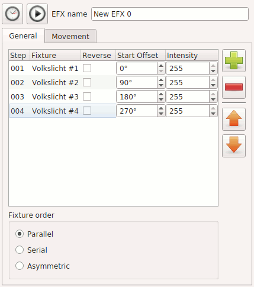
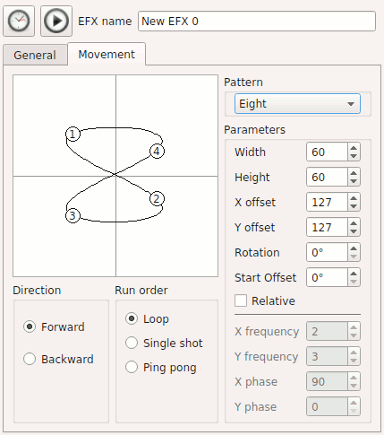

EFXを編集することができます。
エディターは2つのタブで構成されています。
EFXを編集することができます。
エディターは2つのタブで構成されています。
EFXを編集することができます。
エディターは2つのタブで構成されています。


|
EFXファンクションの時間に関する項目を設定します。
|

|
実際にどのようにフィクスチャーが動くのか、プレビューをすることができます。 |
| 名前 | ファンクション名を変更できます。 |
| フィクスチャー一覧 |
|

|
EFXにフィクスチャーを追加します。ムービングやスキャナー等のPan/Tilt機能が搭載されているフィクスチャー及び、RGBで色をコントロールするフィクスチャーのみ追加ができます。 |

|
フィクスチャーを削除します。 |

|
選択しているフィクスチャーを上へ移動します。 |

|
選択しているフィクスチャーを上へ移動します。 |
| Fixture order | 複数のフィクスチャーをコントロールする際のオプションです。詳しくは下記を参照してください。 |

| パターン設定 |
EFXの動きを左の図を見ながら設定することができます。右のパラメータを変更すると左の図上に点として各フィクスチャーの動きを表示します。 この動きの速度は全般タブから設定できます。 |
| 方向 |
フィクスチャーの全般の動きの向きを設定します。(全般タブにて、逆にチェックを入れた場合にはそのフィクスチャーのみがこの設定の逆に動きます。)
|
| タイプ |
|
| パターン |
動作パターンをいくつか下に挙げます。
|
| パラメータ |
|
| Color Bacground | RGBをコントロールする際に、出力される色のプレビューを表示することができます。 |
| Relative | 下記を参照してください。 |
複数のフィクスチャーを操作する場合にそれぞれのフィクスチャーをアルゴリズムに基づいてコントロールさせることができます・
フィクスチャーごと、または全ての動きの方向を変更できます。この方向の設定は繰り返しや、一方通行などの全ての再生パターンで有効な設定です。 ループするように設定している場合は、自動で停止することはありません、手動で停止してください。
ムービング等のPan/TiltをコントロールするEFXを再生する際に、座標を今再生時の位置を基準として、相対的にコントロールすることができます。例えば、小さな円を描くようなEFXを作成しておき、壁に向く位置のシーンと同時に再生すれば、壁に小さな円を描き、床に向くシーンと同時に再生すれば床に小さな円を描きます。この機能はRelativeにチェックを入れることで有効になります。
チェックを外すことで逆に絶対座標モードになり、再生時の状況に関わらず同じ所に円などを描きます。
Relativeモード(相対座標モード)では、左の図の中心(X:127, Y:127)を基準として相対座標が計算されます。
相対モードは似たようなEFXを何種類も作成しなければいけないときに便利な機能です。例えば決まった動きをするEFXを壁、天井、床、柱などたくさんの場所に作らなければならないときには、EFXで動きだけ、シーンで場所だけのように役割を分けて作成しておくと後々修正するときにも楽になると思います。
ポイント
相対モードで設定しておけば、EFXの再生中にも同時に再生しているシーンをクロスフェードで切り替えることで、さらに凝った動きもできます。
バーチャルコンソールでXYパットと相対モードのEFXを用いて本番中に任意の場所に動かすことができます。